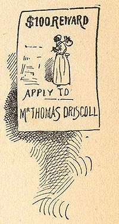

|
 This is
the wanted poster created by the owner of the Arkansas
plantation, whom Roxy calls "my master," and Tom, whom Roxy
had made her "master" when she switched him into the white
baby's clothes and cradle. Another irony, of course, is the
way it depicts her as a "runaway-nigger" -- i.e. as
"black," even though Roxy herself is (we learned in Chapter
2) "as white as anybody." The ironies grow more complex,
though, when we think about the way she herself has
"blacked up" to disguise herself as a fugitive slave, just
as Tom will later use burnt cork to make himself "black"
before robbing and killing the Judge. Nor do they stop
there: Roxy was legally "free" when sold to her new
"master," and the person who sold her, and whose name is on
the reward poster, is himself "black" and her own son. Of
all these things this poster is the "sign," leaving it
difficult to find any clear moral perspective from which to
judge slavery. The Barrett Collection, UVA PS 1317 .A1 1894 |